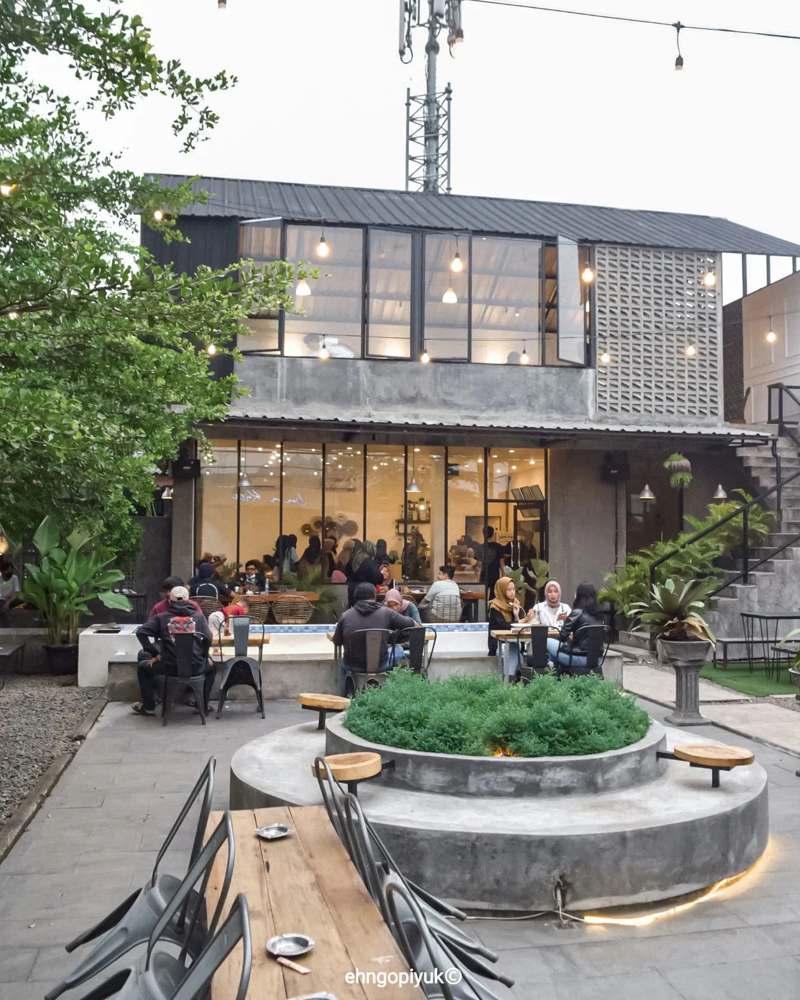
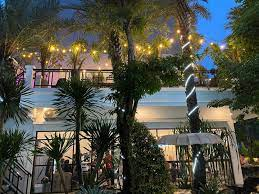

3 tempat nongkrong paling comfy di ciledug
Tempat nongkrong sudah jadi kebutuhan harian, baik untuk kaum remaja atau orang dewasa. Tempat nongkrong yang nyaman ditambah menu hidangannya yang lezat tentu jadi incaran banyak orang, baik untuk sekadar nongkrong santai, reunian, atau mengerjakan pekerjaan.
Nah, buat kamu yang tinggal di Tangerang, tepatnya di daerah Ciledug, ada beberapa tempat nongkrong yang recommended di daerah Ciledug. Lokasinya tak akan sulit dijangkau, bahkan mungkin dekat dengan berbagai perumahan di Ciledug. Daripada penasaran, langsung saja simak penjelasannya berikut ini!
1. the rooftop CBD

The rooftop CBD menjadi opsi untuk masyarakat yang ingin nongkrong sambil ditemani indahnya matahari terbenam, udara yang sejuk, serta indahnya citylight.
2. Box Koffies

Mungkin masyarakat masih banyak yang belum mengetahui coffe shop ini dikarenakan letak tempatnya yang tersembunyi. Box koffies bisa dijadikan referensi tempat nongkrong untuk masyarakat yang ingin ngopi cantik ditemani dengan live music yang menenangkan.
3. Onado
<
Onado menjadi opsi yang cocok untuk masyarakat yang ingin kumpul bersama dengan teman - teman karena tempatnya yang luas dan harganya yang affordable.